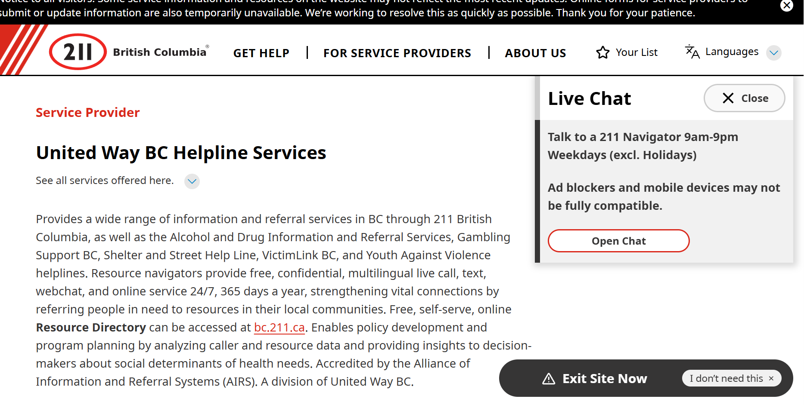
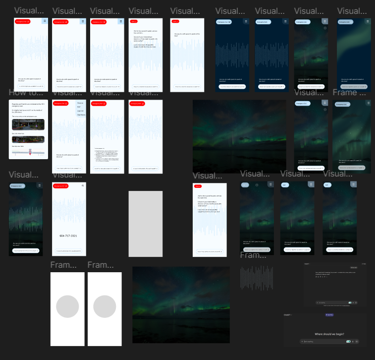
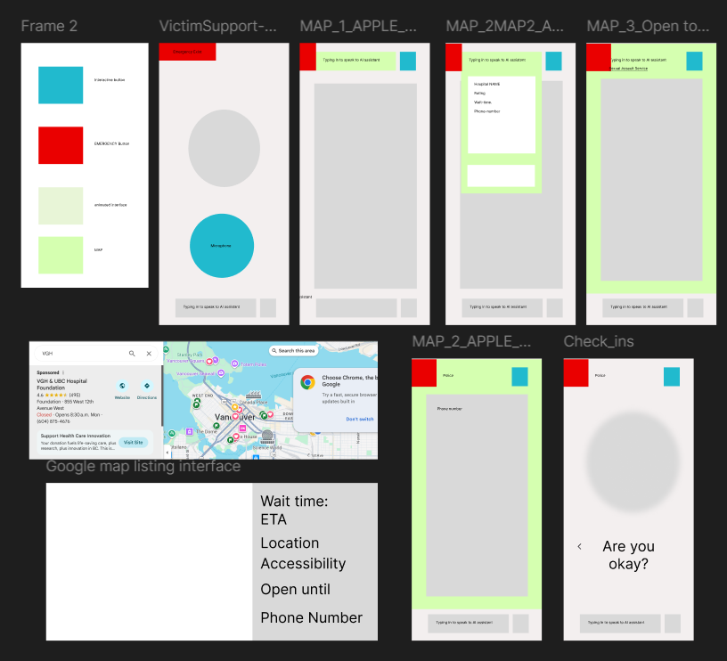

The Problem
After an assault, students often face a hard cutoff — support services close, and survivors are left without anywhere to turn. The friction of downloading a separate crisis app in that moment is a real barrier. We built directly into existing university infrastructure to remove it.
But the problem runs deeper than a missing app. To understand what survivors actually encounter after hours, I tested the existing support landscape myself — calling services at different times across multiple days to document exactly where the system breaks down.
Field Research — Testing the Existing System
Before designing anything, I called real crisis and support lines at different times of day and night to map the actual gaps. What I found revealed that the problem isn't just access — it's the quality and speed of that access when it matters most.
Finding 1 — The 9 PM Chat Cutoff (United Way)
The United Way's chat-based crisis support closes at 9 PM. A survivor reaching out late at night hits a dead end immediately — not because help doesn't exist, but because the chat interface presents no alternative when it closes.

United Way chat — confirmed closed after 9 PM, with no warm handoff to available alternatives
Finding 2 — BC Victims Line: One Person, All of BC, After Midnight
The BC Victims Line operates after midnight — but with a single counsellor covering the entire province. I called at different times to understand the real experience:
Capacity after midnight
One counsellor handles all of BC. If someone else is already on the line when you call, you wait — for as long as it takes. There is no queue estimate, no callback system.
Resource lookup time: 1–2 minutes
When I asked about specific local resources, the counsellor had to search a database in real time — taking 1 to 2 minutes to locate and read back information a caller might urgently need.
Write it down yourself
Resources are provided verbally. The caller is responsible for writing them down. For someone in crisis, at midnight, this places an unreasonable cognitive burden at exactly the wrong moment.
No wait time visibility
You have no way of knowing if you'll wait 30 seconds or 30 minutes. For a survivor already in distress, uncertainty compounds the harm.
Current System vs. SFUSnap VictimSupport
The field research gave us a clear benchmark. Every feature decision maps directly to a real gap that was documented through testing.
| Scenario | Current System | SFUSnap VictimSupport |
|---|---|---|
| After 9 PM | United Way chat closes. No warm handoff. | Available 24/7 — no cutoff. |
| After midnight in BC | One counsellor for all of BC. Unknown wait time. | AI triage responds immediately. Local hospital wait times surfaced in real time. |
| Finding specific resources | Counsellor searches database live: 1–2 minute lookup. Caller writes it down. | Specific resources surfaced instantly. No lookup. No writing required. |
| Wait time visibility | None — caller has no information. | Live hospital and service wait times displayed before the user commits to a path. |
| Cognitive load on the caller | High — must listen, retain, and transcribe information under stress. | Low — information is presented visually, persistently, and one step at a time. |
Design Approach
We implemented Trauma-Informed Design principles throughout — prioritizing high-contrast, low-stress UI that reduces cognitive load during a crisis. Every interaction was designed to feel calm, direct, and trustworthy.
Real-time Wait Times
Live data on local hospital and campus support availability — so survivors can make an informed decision without a phone call.
Secure Evidence Logs
Zero-friction export system for timestamped documentation to support future legal action — no writing required.
Gemini AI Triage
Sensitive AI guidance that surfaces factual hotline data and specific resources instantly — no database lookup, no wait.
Design Iterations
The UI went through rapid iteration cycles to ensure the interface remained calm and directive under high-stress conditions. Every screen decision was weighed against one question: would a survivor in crisis be able to act on this immediately?

Early UI drafts — establishing tone, hierarchy, and crisis-mode clarity

UX flow drafts — mapping the survivor journey from arrival to support access
Technical Build
Built in React & JavaScript over a 36-hour hackathon sprint. The multi-agent AI system was designed specifically to avoid the pattern of open-ended AI conversation — survivors needed facts and phone numbers, not a chatbot experience.
Gemini API Integration
Intelligent, context-sensitive guidance constrained to factual crisis resources — no hallucination risk on critical information.
Offline-First Database
A local emergency contact database ensures 100% offline access to phone numbers when cellular data is unavailable or cut off.
Expert Review & User Testing
Before and after the build, the application was reviewed by professionals in clinical care, machine learning, and direct user testing.
2 Certified Counsellors
Two certified counsellors reviewed the application and approved it — confirming the AI guidance approach and resource surfacing was appropriate for trauma-affected users.
ML Researcher
One ML researcher considered it a strong application, noting that more testing is needed before broader deployment — the right call for any tool operating in a clinical-adjacent space.
User: Useful & Resilient
One user found it genuinely useful and noted it was "rather difficult to corrupt" — a critical quality for a tool that must remain reliable under adversarial or distressed use conditions.
User: Night-time View
One user raised an important flag: survivors are most likely to reach for this at night, when most interfaces are blinding. The question — how to differentiate a dark, calm, and easy-to-navigate night mode — is an open design problem for the next iteration.
Design Philosophy
My approach here — and across all my work — is to take what's already working, improve it, test it, and repeat. The BC Victims Line exists and provides real value. United Way's chat matters. The answer isn't to replace those systems — it's to fill the gaps they leave, informed by direct evidence of where they fall short.
The night-time UI feedback is a good example of this: a user surfaced a real friction point grounded in how people actually use the tool. That becomes the starting point for the next iteration — not a critique, a spec.
Outcome
The prototype demonstrated that integrating crisis tools into existing university infrastructure removes the most common barrier: "I didn't know where to go." The evidence export feature received particular recognition for its thoughtful approach to supporting survivors through legal processes.